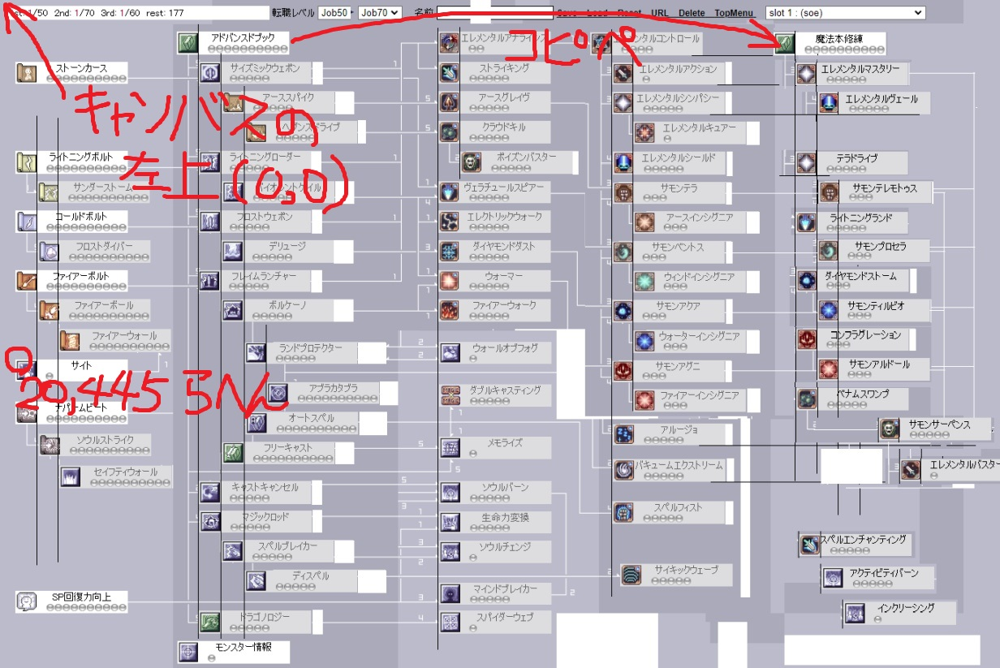

わむてる改造方法
1.わむてる公式の下の方にあるゴミ箱から skill4.10.00.zip をダウンロードして展開。
2.ブラウザの倍率をCTRL+かCTRL-で100％にしてスクショをとってペイントかなんかで開いたら、
キャンバスの左上に画像を合わせ大体の配置を決める。無いスキルは適当にコピペして作る。
3.スキルボックスの座標(この画像のサイトなら 20,445 らへん)をメモっとく。

4.改造したい職のhtmlファイルをメモ帳で開いて下の方～にある対象のスキルを検索して座標を上書きする。
一番上のスキル(上の画像ならストーンカース)の座標をtopだけ変えて書いてくと楽。

5.追加スキルを書き足す。下のようなブロックをコピペしてIDとスキル名、座標を適当に変更する。
IDはオレオレIDでおｋだが重複不可、追加したスキルIDは控えておくこと(下の画像なら LLND)
アイコンは似たようなスキルからコピペ。
6.追加したスキルIDを実装していく。
htmlファイルの上の部分から追加した =スキルID_P を =0; の間に書き足す。
ついでに use4 と JMAX_P = 45; を追加し、verを40かそのへんにする。
その下に続く スキルID_M も最大スキルレベルなので追加していく。
7.追加したIDが前提のスキルを追加していく。スキルID_M の下に スキルID_F があるので追加する。
例えばライトニングランドLv1がサモンプロセラの前提なので追加する。
三次が前提の場合、三次職スキルの方も忘れずに書き足しておく。
<書式>
function スキルID_F(){
Point( スキルID_P, 最大スキルレベル, "スキルID");
if( スキルID_P < 1 ){
// スキルLvが前提以下の場合は対象スキルIDを無効にする
Disable("無効スキルID"); if( 無効スキルID_P > 0){ 無効スキルID_P=0; 無効スキルID_F(); }
}
if( スキルID_P >= 1 && 別の前提スキルID_P >= 1 ){
// スキルLvが前提以上の場合は対象スキルIDを有効にする
Visible("有効スキルID");
}
if( 前提スキルID_P < 2 && スキルID_P > 0 ){
// このスキルIDが前提を満たして居ない場合、前提分のポイントを追加する
前提スキルID_P = 2; Visible("スキルID"); 前提スキルID_F;
}
}
8.スキルレベルの範囲を追加する
if(parts == "スキルID") のブロックが大量にあるので、追加してスキルIDの最大レベルを指定する。

9.ポイント表示やらクリアやら追加、use4 を追加して四次職スキルはそこに入れる。コピペ地獄。

10.セーブ
0から滝のように連番でならんでるので、追加したスキルID_P を連番になるように追加
赤枠の部分は全職共通の転職Lvなので、四次職用の tdata[xx] = ( JMAX_P - 40 ) / 5; を加えて最後に移す。
増えた分の番号、89番なら0番目もあるので+1して90個をブロックの先頭にある var tdata = new Array(個数); に更新する。
11.ロード
セーブで追加したのと同じ番号にスキル_Pを割り当てる事、四次職用に JMAX_P = (tdata[xx] * 5) + 40; を加える。
それに加えて document.Msg.maxjLv4.value = JMAX_P; を追加しておく。下の スキルID_F ブロックも追加。
12.四次職 最大JobLv
Job40から増えてくのが予想されるので、転職レベルの下に5きざみで70まで追加しておく。
名前欄の場所を使うので名前欄の type="text" を type="hidden" にしておく。
おわり
やつおらんやろ… 特に 7. 10. 11. 辺り人に説明するの無理ゲー過ぎる…
ちなバグるならそこ。